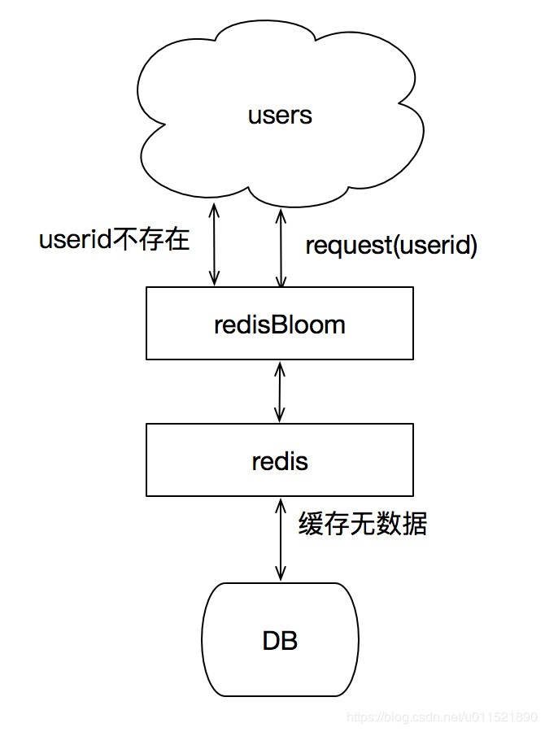

原文连接:https://www.cnblogs.com/yscl/p/12003359.html
在学习redis过程中提到一个缓存穿透的问题， 书中参考的解决方案之一是使用布隆过滤器， 那么就有必要来了解一下什么是布隆过滤器。在参考了许多博客之后， 写个总结记录一下。
一、布隆过滤器简介
什么是布隆过滤器？
本质上布隆过滤器( BloomFilter )是一种数据结构，比较巧妙的概率型数据结构（probabilistic data structure），特点是高效地插入和查询，可以用来告诉你 “某样东西一定不存在或者可能存在”。
相比于传统的 Set、Map 等数据结构，它更高效、占用空间更少，但是缺点是其返回的结果是概率性的，而不是确切的。
布隆过滤器原理
布隆过滤器内部维护一个bitArray(位数组)， 开始所有数据全部置 0 。当一个元素过来时，能过多个哈希函数（hash1,hash2,hash3....）计算不同的在哈希值，并通过哈希值找到对应的bitArray下标处，将里面的值 0 置为 1 。 需要说明的是，布隆过滤器有一个误判率的概念，误判率越低，则数组越长，所占空间越大。误判率越高则数组越小，所占的空间越小。
下面以网址为例来进行说明, 例如布隆过滤器的初始情况如下图所示：
现在我们需要往布隆过滤里中插入baidu这个url，经过3个哈希函数的计算，hash值分别为1，4，7，那么我们就需要对布隆过滤器的对应的bit位置1， 就如图下所示：
接下来，需要继续往布隆过滤器中添加tencent这个url，然后它计算出来的hash值分别3，4，8，继续往对应的bit位置1。这里就需要注意一个点， 上面两个url最后计算出来的hash值都有4，这个现象也是布隆不能确认某个元素一定存在的原因，最后如下图所示：
布隆过滤器的查询也很简单，例如我们需要查找python，只需要计算出它的hash值， 如果该值为2，4，7，那么因为对应bit位上的数据有一个不为1， 那么一定可以断言python不存在，但是如果它计算的hash值是1，3，7，那么就只能判断出python可能存在，这个例子就可以看出来， 我们没有存入python，但是由于其他key存储的时候返回的hash值正好将python计算出来的hash值对应的bit位占用了，这样就不能准确地判断出python是否存在。
因此， 随着添加的值越来越多， 被占的bit位越来越多， 这时候误判的可能性就开始变高，如果布隆过滤器所有bit位都被置为1的话，那么所有key都有可能存在， 这时候布隆过滤器也就失去了过滤的功能。至此，选择一个合适的过滤器长度就显得非常重要。
从上面布隆过滤器的实现原理可以看出，它不支持删除， 一旦将某个key对应的bit位置0，可能会导致同样bit位的其他key的存在性判断错误。
布隆过滤器的准确性
布隆过滤器的核心思想有两点：
- 多个hash，增大随机性，减少hash碰撞的概率
- 扩大数组范围，使hash值均匀分布，进一步减少hash碰撞的概率。
虽然布隆过滤器已经尽可能的减小hash碰撞的概率了，但是，并不能彻底消除，因此正如上面的小例子所举的小例子的结果来看， 布隆过滤器只能告诉我们某样东西一定不存在以及它可能存在。
关于布隆过滤器的数组大小以及相应的hash函数个数的选择， 可以参考网上的其他博客或者是这个维基百科上对应词条上的结果: Probability of false positives .

上图的纵坐标p是误判率，横坐标n表示插入的元素个数，m表示布隆过滤器的bit长度，当然上图结果成立都假设hash函数的个数k满足条件k = (m/n)ln2(忽略k是整数)。
从上面的结果来看， 选择合适后误判率还是比较低的。
布隆过滤器的应用
- 网页爬虫对URL的去重，避免爬取相同的URL地址
- 反垃圾邮件，从数十亿个垃圾邮件列表中判断某邮箱是否垃圾邮箱（同理，垃圾短信）
- 缓存穿透，将所有可能存在的数据缓存放到布隆过滤器中，当黑客访问不存在的缓存时迅速返回避免缓存及DB挂掉。
- 黑名单过滤，
二、python中使用布隆过滤器
先去这个网站下载
bitarray这个依赖https://www.lfd.uci.edu/~gohlke/pythonlibs/#bitarray直接安装会报错
error: Microsoft Visual C++ 14.0 is required. Get it with "Build Tools for Visual Studio": https://visualstudio.microsoft.com/downloads/- 安装
wheel文件, 防止我们主动安装报这样的错误pip3 install bitarray-1.1.0-cp36-cp36m-win_amd64.whl pip3 install pybloom_live
使用案例：
from pybloom_live import ScalableBloomFilter, BloomFilter
# 可自动扩容的布隆过滤器
bloom = ScalableBloomFilter(initial_capacity=100, error_rate=0.001)
url1 = 'http://www.baidu.com'
url2 = 'http://qq.com'
bloom.add(url1)
print(url1 in bloom)
print(url2 in bloom)# BloomFilter 是定长的
from pybloom_live import BloomFilter
url1 = 'http://www.baidu.com'
url2 = 'http://qq.com'
bf = BloomFilter(capacity=1000)
bf.add(url1)
print(url1 in bf)
print(url2 in bf)三、redis中使用布隆过滤器
详细的文档可以参考官方文档。
这个模块不仅仅实现了布隆过滤器，还实现了 CuckooFilter（布谷鸟过滤器），以及 TopK功能。CuckooFilter是在 BloomFilter的基础上主要解决了BloomFilter不能删除的缺点。 下面只说明了布隆过滤器
安装
传统的redis服务器安装 RedisBloom 插件，详情可以参考centos中安装redis插件bloom-filter
我这里使用docker进行安装，简单快捷。
docker pull redislabs/rebloom:latest
docker run -p 6379:6379 --name redis-redisbloom redislabs/rebloom:latest
docker exec -it redis-redisbloom /bin/bash命令
命令使用非常简单。
reserve
bf.reserve {key} {error_rate} {size}
创建一个空的名为key的布隆过滤器，并设置一个期望的错误率和初始大小。{error_rate}过滤器的错误率在0-1之间，
127.0.0.1:6379> bf.reserve black_male 0.001 1000
OKadd, madd
bf.add {key} {item}
bf.madd {key} {item} [item…]
往过滤器中添加元素。如果key不存在，过滤器会自动创建。
127.0.0.1:6379> bf.add test 123
(integer) 1
127.0.0.1:6379> bf.madd urls baidu google tencent
1) (integer) 0
2) (integer) 0
3) (integer) 1
# 上面已经存在的值再次添加会返回0， 不存在则返回1exists, mexists
bf.exists {key} {item}
bf.mexists {key} {item} [item…]
判断过滤器中是否存在该元素，不存在返回0，存在返回1。
127.0.0.1:6379> bf.exists test 123
(integer) 1
127.0.0.1:6379> bf.mexists urls baidu google hello
1) (integer) 1
2) (integer) 1
3) (integer) 0四、python程序中使用redisbloom
使用redisbloom这个模块来操作redis的布隆过滤器插件
pip3 install redisbloom
使用方法，参考官方给出的例子即可。https://github.com/RedisBloom/redisbloom-py
# 自己的简单使用
from redisbloom.client import Client
# 因为我使用的是虚拟机中docker的redis, 填写虚拟机的ip地址和暴露的端口
rb = Client(host='192.168.12.78', port=6379)
rb.bfAdd('urls', 'baidu')
rb.bfAdd('urls', 'google')
print(rb.bfExists('urls', 'baidu')) # out: 1
print(rb.bfExists('urls', 'tencent')) # out: 0
rb.bfMAdd('urls', 'a', 'b')
print(rb.bfMExists('urls', 'google', 'baidu', 'tencent')) # out: [1, 1, 0]误判率的测试demo
"""
基于redis布隆过滤器的误判率的测试
"""
import time
from redisbloom.client import Client
rb = Client(host='192.168.12.78', port=6379)
def insert(size, key='book'):
"""插入数据"""
# 一条条插入速度太慢了
# for i in range(size):
# rb.bfAdd(key, f'book{i}')
s = time.time()
step = 1000 # 每次插入1000条数据
for start in range(0, size, step):
stop = start + step
if stop >= size:
stop = size
rb.bfMAdd(key, *range(start, stop))
print('插入结束... 花费时间: {:.4f}s'.format(time.time() - s))
def select(size, key='book'):
"""查询数据"""
# 统计误判个数
count = 0
s = time.time()
# 单条查询速度太慢了。。。
# for i in range(size, size * 2):
# count += rb.bfExists(key, i)
step = 1000 # 每次查1000条数据
for start in range(size, size * 2, step):
stop = start + step
if stop >= size * 2:
stop = size * 2
count += rb.bfMExists(key, *range(start, stop)).count(1) # 返回值[1, 0, 1, ...]统计1的个数
print('size: {}, 误判元素个数: {}, 误判率{:.4%}'.format(size, count, count / size))
print('查询结束... 花费时间: {:.4f}s'.format(time.time() - s))
print('*' * 30)
def _test1(size, key='book'):
"""测试size个不存在的"""
rb.delete(key) # 先清空原来的key
insert(size, key)
select(size, key)
def _test2(size, error=0.001, key='book'):
"""指定误差率和初始大小的布隆过滤器"""
rb.delete(key)
rb.bfCreate(key, error, size) # 误差率为0.1%， 初始个数为size
insert(size, key)
select(size, key)
if __name__ == '__main__':
# The default error rate is 0.01 and the default initial capacity is 100.
# 这个是默认的配置， 初始大小为100， 误差率默认为0.01
_test1(1000)
_test1(10000)
_test1(100000)
_test2(500000)# 输出的结果
插入结束... 花费时间: 0.0409s
size: 1000, 误判元素个数: 14, 误判率1.4000%
查询结束... 花费时间: 0.0060s
******************************
插入结束... 花费时间: 0.1389s
size: 10000, 误判元素个数: 110, 误判率1.1000%
查询结束... 花费时间: 0.0628s
******************************
插入结束... 花费时间: 0.5372s
size: 100000, 误判元素个数: 1419, 误判率1.4190%
查询结束... 花费时间: 0.4318s
******************************
插入结束... 花费时间: 1.9484s
size: 500000, 误判元素个数: 152, 误判率0.0304%
查询结束... 花费时间: 2.2177s
******************************如果想要布隆过滤器知道具体的耗费内存大小以及对应的错误率的信息， 可以使用查看这个布隆过滤器计算器计算出最后的结果。就如下面所示， 1kw数据， 误差为0.01%， 只需要23M内存。
五、缓存穿透
现在又回到开头的问题， 解决缓存穿透的问题。
什么是缓存穿透
我们通常使用redis作为数据缓存，当请求进来时先通过key去redis缓存查询，如果缓存中数据不存在，需要去查询数据库的数据。当数据库和缓存中都不存在的数据来查询时候，请求都打在数据库的请求中。如果这种请求量很大，会给数据库造成更大的压力进而影响系统的性能。
解决这类问题的方法
方法一:当DB和redis中都不存在
key，在DB返回null时，在redis中插入`当key再次请求时,redis直接返回null`，而不用再次请求DB。
方法二:使用redis提供的
redisbloom，同样是将存在的key放入到过滤器中。当请求进来时，先去过滤器中校验是否存在，如果不存在直接返回null。

黑名单的小例子
import redis
from redisbloom.client import Client
# 创建一个连接池来进行使用
pool = redis.ConnectionPool(host='192.168.12.78', port=6379, max_connections=100)
def create_key(key, error, capacity):
rb = Client(connection_pool=pool)
rb.bfCreate(key, errorRate=error, capacity=capacity)
def get_item(key, item):
"""判断是否存在"""
rb = Client(connection_pool=pool)
return rb.bfExists(key, item)
def add_item(key, item):
"""添加值"""
rb = Client(connection_pool=pool)
return rb.bfAdd(key, item)
if __name__ == '__main__':
# 添加黑名单, 误差为0.001， 大小为1000
create_key('blacklist', 0.001, 1000)
add_item('blacklist', 'user:1')
add_item('blacklist', 'user:2')
add_item('blacklist', 'user:3')
add_item('blacklist', 'user:4')
print('user:1是否在黑名单-> ', get_item('blacklist', 'user:1'))
print('user:2是否在黑名单-> ', get_item('blacklist', 'user:2'))
print('user:6是否在黑名单-> ', get_item('blacklist', 'user:6'))